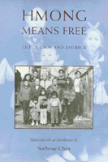

<body bgcolor="#FFFFFF" text="#000000" link="#0000FF" vlink="#CC0000" alink="#CC0000"><center><hr width="350" size="1" align="center" noshade>Three generations of Hmong refugees expose the trauma and the joy of their lives<hr width="350" size="1" align="center" noshade><p><a href="https://cdcshoppingcart.uchicago.edu/Cart/ChicagoBook.aspx?ISBN=9781566391627&&PRESS=temple" target="_top">Buy this book!</a> | <a href="https://cdcshoppingcart.uchicago.edu/Cart/Cart.aspx?PRESS=temple" target="_top">View Cart</a> | <a href="https://cdcshoppingcart.uchicago.edu/Cart/Cart.aspx?PRESS=temple" target="_top">Check Out</a></p><p></p></center><!--none//--><h1>Hmong Means Free</h1>
<H2>Life in Laos and America</H2>
<h3>edited by Sucheng Chan</h3>
<P>cloth 1-56639-162-8 $69.95, Apr 94, <FONT COLOR=#990033>Out of Print</FONT>
<br>paper 1-56639-163-6 $29.95, Apr 94, <FONT COLOR=#990033>Available</FONT>
<br>Electronic Book 1-43990-139-2 $29.95 <FONT COLOR=#990033>Out of Print</FONT>
<BR> 296 pp
6x9
3&nbsp;figures 16&nbsp;halftones
</P><P>This collection of evocative personal testimonies by three generations of Hmong refugees is the first to describe their lives in Laos as slash-and-burn farmers, as refugees after a Communist government came to power in 1975, and as immigrants in the United States. Reflecting on the homes left behind, their narratives chronicle the difficulties of forging a new identity.
<P>From Jou Yee Xiong's Life Story:
<BR><I>"I stopped teaching my sons many of the Hmong ways because I felt my ancestors and I had suffered enough already. I thought that teaching my children the old ways would only place a burden on them."</I>
<P>From Ka Pao Xiong's (Jou Yee Xiong's son) Life Story:
<BR><I>"It has been very difficult for us to adapt because we had no professions or trades and we suffered from culture shock. Here in America, both the husband and wife must work simultaneously to earn enough money to live on. Many of our children are ignorant of the Hmong way of life&#133. Even the old people are forgetting about their life in Laos, as they enjoy the prosperity and good life in America."</I>
<P>From Xang Mao Xiong's Life Story:
<BR><I>"When the Communists took over Laos and General Vang Pao fled with his family, we, too, decided to leave. Not only my family, but thousands of Hmong tried to flee. I rented a car for thirty thousand Laotian dollars, and it took us to Nasu&#133. We felt compelled to leave because many of us had been connected to the CIA&#133. Thousands of Hmong were traveling on foot. Along the way, many of them were shot and killed by Communist soldiers. We witnessed a bloody massacre of civilians."</I>
<P>From Vue Vang's Life Story:
<BR><I>"Life was so hard in the [Thai refugee] camp that when we found out we could go to the United States, we did not hesitate to grasp the chance. We knew that were we to remain in the camp, there would be no hope for a better future. We would not be able to offer our children anything better than a life of perpetual poverty and anguish."</I>
<BR>&nbsp;<h2>Excerpt</h2><P>Excerpt available at <a href="http://www.temple.edu/tempress">www.temple.edu/tempress</a></p>
<BR>&nbsp;<h2>Contents</h2><P>
<p>Illustrations
<br>Preface
<br>Acknowledgements
<br>Personal and Place Names
<br>Introduction: The Hmong Experience in Asia and the United States
<br>1. The Xiong Family of Goleta
<br>2. The Xiong Family of Lompoc
<br>3. The Fang Family of San Diego
<br>4. The Tcha Family of Fresno
<br>5. The Maua Family of Sanger
<br>Notes to the Introduction
<br>Selected Bibliography
<br>Notes on the Editor and Transcribers/Translators
</P><BR>&nbsp;<H2>About the Author(s)</H2>
<P><b>Sucheng Chan</b>, Professor and Chair of Asian American Studies at the University of California, Santa Barbara, is general editor of Temple's <I><a href="../asam_history.html" target="_top">Asian American History and Culture Series</a></i>.</P>
<BR><H2>Subject Categories</H2>
<p><A HREF="/tempress/general.html" TARGET="_top">General Interest</a>
<BR><A HREF="/tempress/asian_amer.html" TARGET="_top">Asian American Studies</a>
</p>
<BR><h2 class="inpageheading">In the series</H2>
<P><I><a href="http://www.temple.edu/tempress/asam_history.html" onMouseOver="window.status='Click for other books in this series!'; return true;" onMouseOut="window.status=''; return true;" target="_top">Asian American History and Culture</a></i>, edited by K. Scott Wong, Linda Trinh V�, and Cathy Schlund-Vials.
</p><p>Founded by Sucheng Chan in 1991, the <I>Asian American History and Culture</I>, series has sponsored innovative scholarship that has redefined, expanded, and advanced the field of Asian American studies while strengthening its links to related areas of scholarly inquiry and engaged critique. Like the field from which it emerged, the series remains rooted in the social sciences and humanities, encompassing multiple regions, formations, communities, and identities. Extending the vision of founding editor Sucheng Chan and emeriti editor Michael Omi and David Palumbo-Liu, series editors K. Scott Wong, Linda Trinh V�, and Cathy Schlund-Vials continue to develop a foundational collection that embodies a range of theoretical and methodological approaches to Asian American studies.</p>
<p align="center"><a href="https://cdcshoppingcart.uchicago.edu/Cart/ChicagoBook.aspx?ISBN=9781566391627&&PRESS=temple" target="_top">Buy this book!</a> | <a href="https://cdcshoppingcart.uchicago.edu/Cart/Cart.aspx?PRESS=temple" target="_top">View Cart</a> | <a href="https://cdcshoppingcart.uchicago.edu/Cart/Cart.aspx?PRESS=temple" target="_top">Check Out</a></p><p><font face="Arial" size="1"><a href="copyright.html" onMouseOver="window.status='Web Copyright Policy';return true;" onMouseOut="window.status=''" title="Web Copyright Policy">&copy;</a> 2015 <a href="http://www.temple.edu" target="new" onMouseOver="window.status='Link to Temple University home page';return true;" onMouseOut="window.status=''" title="Link to Temple University home page">Temple University</a>. All Rights Reserved. http://www.temple.edu/tempress/titles/1053_reg.html</font></p>